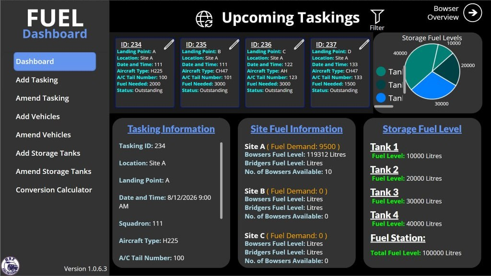
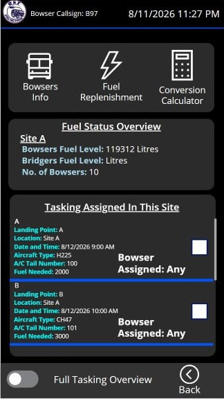

Aircraft Refuelling Strategy Planner (FUEL) SimulationRSAF
A strategy-planning tool for aircraft refuelling. It combines live operational data with historical trend to recommend a refuelling strategy ahead of time, so operators can decide quickly when conditions change.
- Recommends a refuelling strategy ahead of time from trend and live data, instead of operators working it out from scratch under time pressure
- Surfaces the recommendation alongside current conditions so operators can act on it or override it
Power Platform, with an AI-assisted forecasting model behind the recommendation. Currently a working pilot. Add: which unit is piloting it, and the exact forecasting stack


Supply & Demand Logistics Pipeline (MatFlow) SimulationRSAF
A logistics planning system built around an automated pipeline for supply-and-demand requests. Operators monitor the pipeline instead of manually raising and tracking each request during time-critical periods.
- Automated pipeline raises supply and demand requests without manual tracking
- Shifts the operator's job from managing logistics by hand to monitoring pipeline status
Power Platform, with a custom automated request pipeline behind it. Currently a working pilot. Add: which unit is piloting it, and the exact pipeline stack
MILES / MAVIS ScalingRAiD
Usage and maintenance records for Air Specialist Vehicles (ASVs) were spread across manual steps with no single record of who was qualified for what, or of which vehicle was due for servicing. The platform pulls those workflows into one place: structured automation over centralised data, with role management and qualification tracking as first-class parts of the model.
A role management model, per-person qualification records, automated workflow steps replacing manual hand-offs, servicing status tracked ahead of the due date, and reporting that reads from the same store the work is recorded in.
The functions were proved in Power Apps first, then rebuilt as a full-stack application with Lovable once per-user licensing stopped being viable. PowerDocu generated the documentation the prompting worked from.
BOLDFACE ScalingRAiD
Weekly and monthly quiz training on memory-item emergency procedures for aircrew across eight airframes. Content is imported from Excel and CSV; a quiz cannot be submitted until every answer on it is correct, and each crew's readiness status is derived automatically rather than tracked by hand.
- Fill-in-the-blank, checklist-table and multiple-choice questions, graded case-insensitively against the authored answer
- Submit stays hidden until every question on a quiz is correct — mastery enforced by the domain model, not a UI check
- A cadence and rotation engine that derives Outstanding, Overdue, Upcoming and Completed status for every crew
- A readiness dashboard and status board, scoped by squadron or platform, showing who is current across all eight airframes
Delivered spec-first with OpenSpec change proposals, with the storage layer kept swappable behind the same call sites so Microsoft Dataverse can slot in without touching the app.
Rebuilt from the app's own interface code and design tokens — not photos, not invented. Figures shown are illustrative demo data.
GRID EnterpriseRAiD
Goods receipts and invoices arriving across every unit in MINDEF SAF, not filed because the person who received the goods was already on to the next task. I designed and built the capture and repository app; a partner RPA team built the automation that files the extracted data into the finance forms.
Reads a photographed goods receipt or invoice, in whatever format the issuing company used, extracts the fields the finance form and the downstream RPA flow need, and stores every record in one auditable repository.
FUEL Up EnterpriseRSAF
Fuel receipt claims ran on paper dockets, photographed and re-typed by hand for both aviation and vehicle fuel. I designed and built the app that replaced it: a whitelisted sign-in, a camera-first capture flow for the receipt itself, and an audit trail across every submission.
- Whitelist-gated sign-in with a one-time email login code — no passwords to manage
- Camera capture of the fuel receipt or invoice, with manual entry as the fallback when no OCR key is configured
- Separate aviation and vehicle fuel forms, each with its own searchable, exportable history
- A full audit log of every submit, edit, delete and role change, plus an admin panel for platforms, the email whitelist and users


RAiD Facility Booking System EnterpriseRAiD
A centralised facility reservation platform on Microsoft Dataverse and React, built as Developer and Product Owner.
- Role-based access control across four permission tiers
- Approval workflows with end-to-end visibility
- Real-time availability and conflict detection
- Recurring bookings for repeating schedules
- Audit logging on reservation records
- Soft-delete patterns and departmental isolation for multi-tenant use
Designed and implemented end-to-end with specs-driven development (frontend, API integration and data model) in two days, and demonstrated it to stakeholders in a dedicated session. Gemini 3.1, Claude Opus 4.6 and GitHub Copilot assisted the build; none of them runs in the shipped product.
Add: who can confirm the two-day build, or the dates it ran between


Singapore Airshow 2026 Charity Auction AutomationRAiD
Auction tool allowing RSAF personnel to bid for charity bears as part of a charity movement for the Singapore Airshow.
Learned how to make use of FormSG and Plumber (Open Government Products) to safely store sensitive data and user contact details on the Internet considering policy constraints.
Flight Simulator Scheduling System AutomationRAiD
Scheduling system for reserving simulator resources for training and assessment: online slot booking, centralised schedule management and availability visibility. Built as Lead Developer using Code Apps.
Using Lovable to create a quick prototype on the spot to gain user feedback, deploying to PowerApps safely. GitHub Copilot and Google AI Studio assisted the build; neither runs in the shipped app.
SSB Loan Tracking System AutomationRAiD
End-to-end workflow for SSB to track and approve the loaning of their logistic items. Expand: SSB
Rapid prototyping using simple no-code tools to create a functional system and deploy within a day.
Workplace Check In/Out App AutomationFreelance
Developed a PowerApp to simplify and automate the administrative workflow for duty management for duty personnel in an RSAF unit.
- Geofencing for check in/out at designated locations
- Logistics accountability and tracking
- Noticeboards for centralised announcements
- Hand-over features facilitating smooth transitions
Significantly improved the efficiency and accuracy of attendance tracking for duty personnel.
Add: how the efficiency and accuracy change was measured, and who reported it

App Development for Lead Ambassadors CCA AutomationTemasek Poly
Designed an application as a secretary to help automate monthly meeting attendance as well as update databases.
App Development for Mindsports CCA AutomationTemasek Poly
Developed an app for Mindsports club which automates all workflows, taking attendance, and monitoring various logistics.
App Development for Poly Forum 2024 (SYLP) AutomationTemasek Poly
App developed for a nationwide event to efficiently manage attendance of 500 students through geofencing and score tabulation. Add: where the 500-student figure comes from, and who counted it
Code Apps Policy Approval (M365 Tenant) EnablementRAiD
Led the case to unlock Microsoft Power Apps Code Apps across the organisation's M365 environment, working through the relevant cybersecurity authorities within MINDEF.
Every Code Apps project in this portfolio was built after this approval. Before it, Code Apps could not be deployed in the environment at all.
Vibe Coding Masterclass EnablementRSAF · NYP
A large-scale masterclass on vibe-coding (directing AI coding agents from a spec to a working app, and reviewing everything they produce), run for a mixed cohort of citizen developers and engineers, and co-delivered with external academic institutions.
The syllabus covered prompt-driven development, rapid prototyping and Power Apps deployment.
External academic institutions co-delivered the training rather than attending it. Internally the masterclass was recognised in PPCoE updates, and attendance held across the cohort.


R&D for Vibe-Coding Code Apps EnablementRAiD
Explored AI vibe-coding tools to design an end-to-end development workflow for PowerApps Code Apps.
Designed a systematic workflow that reduced development time from months to days for Digital Champions and RAiD developers.
Add: who measured the months-to-days figure, and against which project
App Marketing Skill (marketing-pr) EnablementOpen source
A published AI agent skill that takes a GitHub repository and returns the launch material for it. Point it at a repo and it produces a landing page, two infographics, a video composition and a LinkedIn post — using screenshots of the real app, not mock-ups. Released publicly under MIT, installable in Claude Code and Google Antigravity.
A citizen developer finishes an internal app and then has to convince people to use it. That second job needs screenshots, a page and a post — skills the build didn't require, and time the builder doesn't have.
- Clones the target repo read-only into a temporary directory and never writes back to it
- Runs a threat scan before anything executes; the app is only booted, with mock data, after it passes
- Captures the app's actual screens, and falls back to static reconstructions when Node or a headless browser isn't available, rather than failing
- Emits a marketing spec, a zero-dependency HTML landing page, 16:9 and 9:16 SVG infographics, a Remotion video composition, and LinkedIn copy
Writing a skill someone else installs is a different discipline from writing one for yourself: it has to refuse to damage a stranger's repository, and it has to degrade instead of crash when their machine is missing a tool. Add: who has installed or used it, and one thing a user hit that you hadn't designed for
Google AI Studio System Prompt EnablementOpen source
A system prompt, published for anyone to paste into Google AI Studio's instructions field, that changes how an AI coding assistant behaves before it writes a line: plan first, get approval, stay inside the request.
Left alone, a coding assistant is agreeable and eager — it starts editing on the first message and adds things nobody asked for. For someone who can read the output but not yet audit it line by line, that is the failure mode that costs the most time.
- Holds an approval gate: no change to code, files, data model, dependencies or structure until a complete implementation plan has been shown and accepted
- Requires 2–3 distinct approaches on anything substantial, conventional and unconventional, before one is chosen
- Bans unrequested features, pages, integrations and redesigns mid-implementation
- Instructs the assistant to stop the moment an assumption turns out to be false, and to be direct rather than agreeable
The useful part of a system prompt is the refusals, not the encouragement. Add: the specific incident that made you write it, and roughly how many people you've handed it to
Documentation Generation Tool (PowerDocu) EnablementRAiD
Collaboration with Cydef to clear an open-source documentation generation tool for PowerApps. It came through cleared on both counts: for my own use, and for citizen developers generally. Expand: Cydef
Learned about cybersecurity scanning architecture, policy constraints, and how to collaborate with departments to clear tools for citizen developers.
SAGE Copilot AI EnablementRAiD
Integrating SAGE's ME5 Delta Agent into Copilot for training purposes using open-source models. Expand: SAGE / ME5 / Delta Agent, and what each is and what this integration does, in plain terms
RSAF engineers learning to look after the people on their own team: practice at a conversation that is hard to rehearse without a real subordinate in front of you.
The agent plays the teammate: a shy one, with something on their mind they are afraid to raise with their boss. The engineer role-plays the conversation and finds out what their questions actually surface. It runs on open-source models inside Copilot, for training use.
Navigated license constraints creatively to replicate GPT-4.1 concepts, managing context engineering to prevent hallucinations.
Add: what "replicate GPT-4.1 concepts" means in plain terms, and which parts you built vs. SAGE supplied
1-Day Power Platform Bootcamp (815 SQN) EnablementRAiD
Condensed a 2-day bootcamp into 1 day for 35 users, curating new interactive learning materials. Lovable carried the build half: a working full-stack prototype fast enough that attendees could put a real workflow in front of a user the same day. Expand: 815 SQN Add: where the 35-attendee figure comes from
Comprehensive Guide for New Interns EnablementRAiD
Developed a guide using PowerLib, Google AI Studio, and Lovable to expedite learning curves for the PPCoE team.
Google Colab Text-to-Flowchart Bot EnablementTemasek Poly
Created an AI tool using Python and ChatGPT 3.5 that generates flowcharts from text.
Me, for my own coursework. I was drawing assignment flowcharts by hand from written descriptions, and wanted to describe one and get it back as a graph. The interesting part turned out to be teaching the model to hold its output to the exact code format the Flowgiston Python library would accept.
Explored prompt engineering and integrating Python libraries together in a single notebook for workflow tools.
National AI Student Challenge 2025 · Huawei Track CompetitionTemasek Poly
Mobile app to improve citizen engagement and civic services, allowing people to report issues and track the progress of their requests.
Certificate of Participation from AI Singapore. Add: whether the entry placed, and what the judges assessed
Exposure to ML algorithms, various cloud technologies in Huawei's ecosystem, and MLOps. Introduced to the AI development field.

Whitehacks 2025 (Cybersecurity CTF) CompetitionTemasek Poly
Cybersecurity CTF competition organised by SMU. Used tools such as Wireshark, John the Ripper, and Z-steg.
Add: placed, not placed, or what was assessed
Introduced to various cybersecurity practices transitioning from an engineering background.
Iron Viz Student Edition CompetitionTemasek Poly
Data visualization contest to develop visualization skills. Conducted data analysis and created compelling visualizations.
Add: placed, not placed, or what was assessed
WorldSkills Training (Aircraft Maintenance) CredentialTemasek Poly
Acquired technical skills essential for aircraft maintenance at Lufthansa Technical Training Center, experiencing high-pressure scenarios.
Add: placed, not placed, or what was assessed
Learned riveting, soldering, and composite materials. Instilled resilience, self-discipline, and the ability to handle stress.
Project Management Tracker ScalingRSAF
A planning tool used across RSAF teams to lay out tasks and assign them to the people doing the work. It is in use now and scaling toward an enterprise deployment. Add: which parts you built
Named on the Work page's Security & governance section: I acted as Security Reviewer on it.